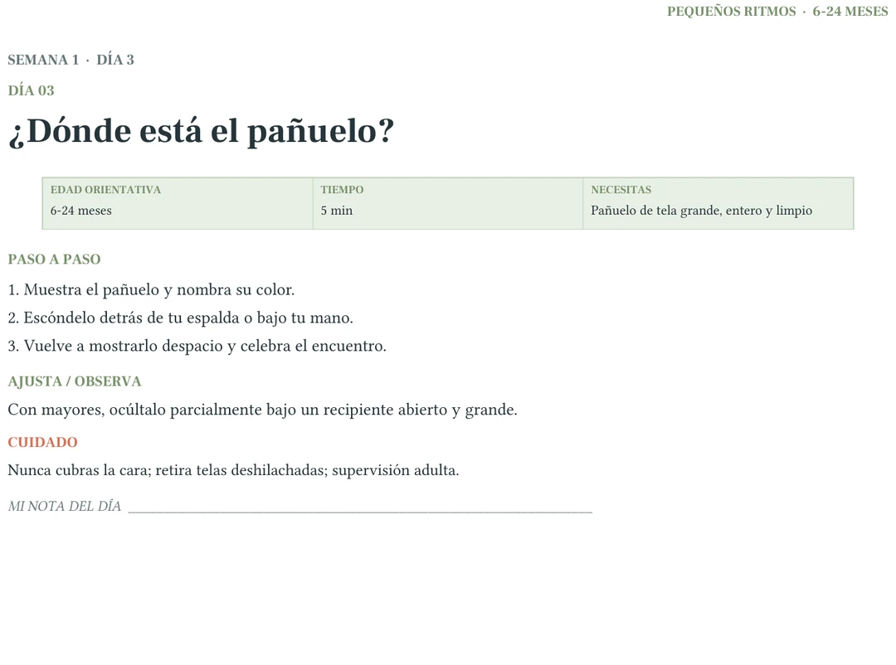
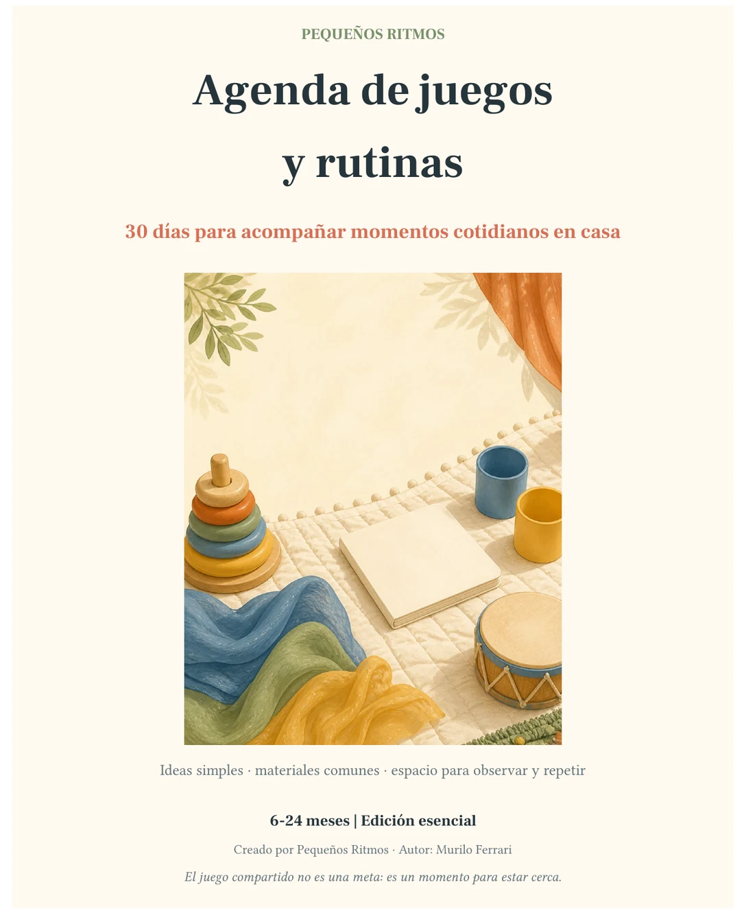
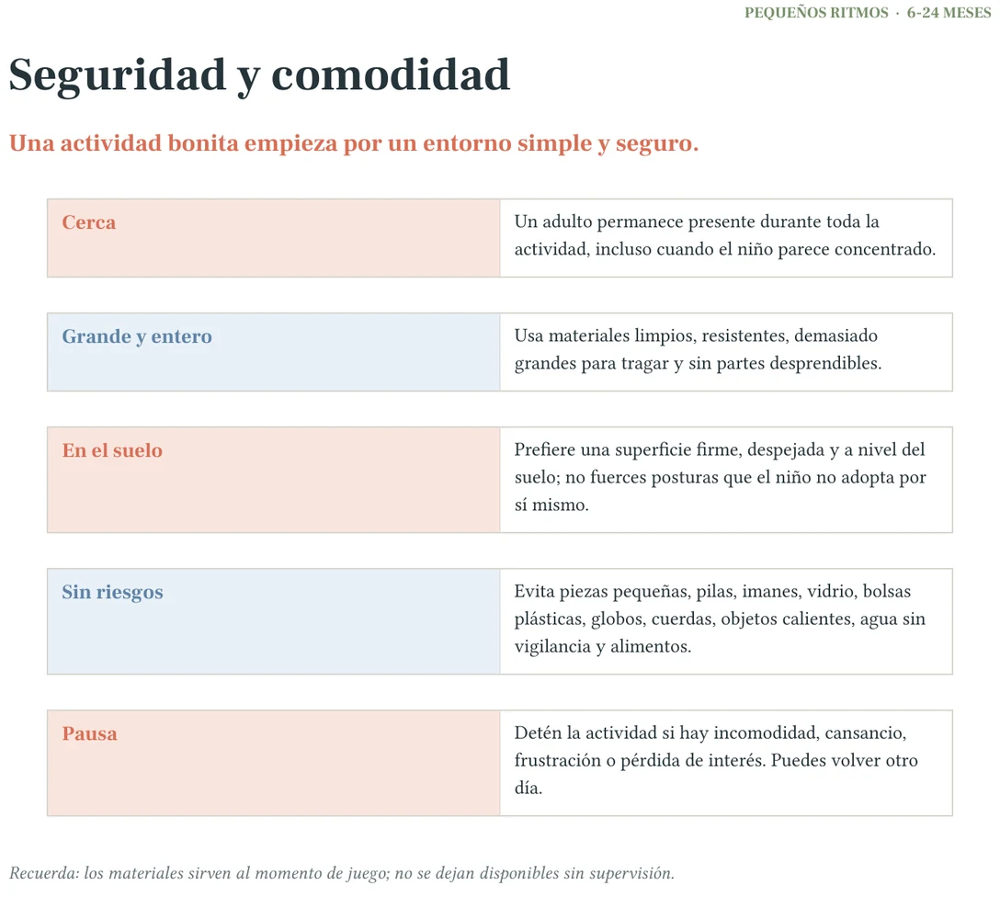
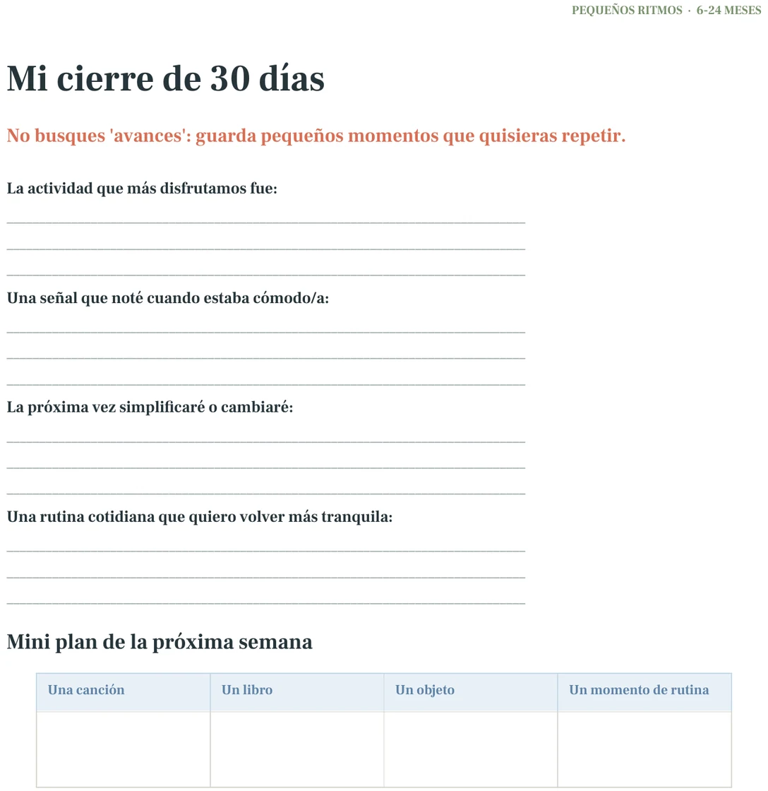

UNA ACTIVIDAD PARA EMPEZAR
QUIZ DE 10 RESPUESTAS · 6–24 MESES
Descubre cuánto conoces a tu hijo
Ordena lo que ya observas —sus señales, momentos y preferencias— y recibe un mapa de juego con una actividad para compartir.
Sin registro · Sin puntaje · No evaluamos el desarrollo.
Tus respuestas se usan solo en este navegador para preparar el resultado. No pediremos nombre, correo ni teléfono, y ninguna respuesta se envía al checkout.
Pregunta 1 de 10
Puedes usar Tab y Enter para responder.
5 DE 10 · SIN RESPUESTAS CORRECTAS
Ya encontraste tres pistas valiosas.
Qué llama su atención, cuándo aparece el mejor momento y cuánto tiempo cabe de verdad. Ahora vamos a convertir esas pistas en una forma simple de empezar.
TU MAPA DE JUEGO
UNA ACTIVIDAD COMPLETA, ANTES DE COMPRAR
Día 03 · ¿Dónde está el pañuelo?
- Muestra el pañuelo y nombra su color.
- Escóndelo detrás de tu espalda o bajo tu mano.
- Vuelve a mostrarlo despacio y celebra el encuentro.
Ajuste: con mayores, ocúltalo parcialmente bajo un recipiente abierto y grande.
Cuidado: nunca cubras la cara; retira telas deshilachadas y mantén supervisión adulta.
Esta es 1 de las 30 actividades escritas con la misma estructura.
DEL RESULTADO A LA PRÁCTICA
Ten una actividad lista para cada día.
Agenda de Juegos y Rutinas — Esencial (6–24 meses) reúne 30 actividades completas con edad orientativa, tiempo, materiales, tres pasos, un ajuste y un cuidado en la misma página.
- 39 páginasPDF digital
- 30 actividadesuna por día
- US$7pago único
Menos de US$0,25 por actividad. Sin suscripción.

Conocer su ritmo no significa adivinarlo ni compararlo. Significa elegir una propuesta, preparar lo necesario, observar su respuesta y ajustar.
- Cercaadulto presente
- Grande y enterosin piezas pequeñas
- Pausasi cambia el interés
PRUEBA DEL PRODUCTO
No es un PDF vacío: mira otras páginas reales.



ANTES DE COMPRAR
Lo esencial, sin letra pequeña.
¿Cómo y cuándo llega?
Por correo cuando Hotmart confirme el pago. Los métodos en efectivo o por débito bancario pueden tardar más en confirmarse.
¿Necesito comprar materiales?
No. Varias propuestas no necesitan nada o usan un objeto común; cada página indica el material antes de empezar.
¿Evalúa el desarrollo?
No. Es una guía de juego compartido y no diagnostica, trata ni sustituye orientación profesional.
¿Cómo funciona el reembolso?
La oferta incluye siete días de garantía. Consulta el procedimiento y las condiciones en la política de reembolsos.
Quiero las 30 actividades · US$7
Pago único · Acceso al confirmarse el pago · Garantía de 7 días
Ver una página real antes de comprarUNA DISTINCIÓN IMPORTANTE
Este quiz no puede decir si un niño “va bien” para su edad.
El resultado organiza preferencias de juego; no evalúa hitos ni desarrollo. Si esa es tu duda principal, busca orientación de un profesional local calificado.
Si además quieres ideas sencillas de juego compartido, puedes ver una actividad de ejemplo.
Ver una actividad de ejemplo